Tab-target de verdad
Selecciona a tu objetivo, gestiona tus enfriamientos y tu recurso, interrumpe, esquiva las mecánicas del jefe. Habilidad y conocimiento, no reflejos de ratón.
Un MMORPG como los de antes: forma grupo, elige tu papel, entra en la mazmorra y derrota al jefe. Sin tiendas que vendan poder. Solo tú, tu grupo y tu destino.
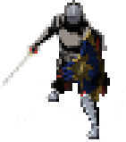
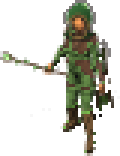
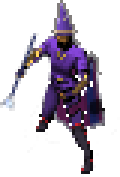


Combate por objetivo, roles que importan, mazmorras que piden coordinación y un mundo que se recorre a pie. Hecho por y para quienes echan de menos esa sensación.
Selecciona a tu objetivo, gestiona tus enfriamientos y tu recurso, interrumpe, esquiva las mecánicas del jefe. Habilidad y conocimiento, no reflejos de ratón.
Sin pagar para ganar. Nunca. Nada que se compre da ventaja: el mejor equipo se consigue jugando, en mazmorras, bandas, profesiones y misiones.
Cada especialización tiene un papel. El tanque sujeta a los monstruos, el sanador mantiene vivo al grupo y el daño acaba el trabajo. Juntos llegáis más lejos.
Instancias para 5, 10 y 20 jugadores con élites, jefes con patrones propios, salas que se cierran al empezar el combate y botín que merece la pena.
Herrero de armas, armero, joyero, alquimista y cocinero. Recolecta, fabrica, mejora y engasta: lo que haces tiene valor de verdad.
Casa de subastas, pujas y compra inmediata. El oro y los objetos los mueven los jugadores, no una tienda.
Cientos de logros que presumir en tu ficha y piezas de conjunto con bonificaciones al llevar 2, 3 y 4 partes. Siempre hay un objetivo más.
Una historia principal que te lleva de un extremo a otro del mundo, misiones de grupo, de mazmorra y de jefe, con recompensas a elegir.
Cada clase tiene tres especializaciones con su propio recurso, sus propias habilidades y su forma de jugar. Elige la que encaje contigo... o pruébalas todas.
La naturaleza responde a su voluntad: la piedra le protege, el bosque caza con él y la primavera cura a los suyos.
 Guardián PrimordialTanque
Guardián PrimordialTanque Furia del BosqueDaño
Furia del BosqueDaño Portador de la PrimaveraSanador
Portador de la PrimaveraSanadorDomina el viento y las corrientes: tormentas en área, ráfagas precisas o apoyo al grupo.
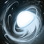
TempestadDaño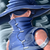
Danza del VendavalDaño Maestro de las Corrientes
Maestro de las Corrientes Apoyo
ApoyoCuerpo y chi en equilibrio: aguanta con hierro, golpea con mil garras o sostiene con su chi.
 Maestro del HierroTanque
Maestro del HierroTanque Mil GarrasDaño
Mil GarrasDaño Maestro del ChiApoyo
Maestro del ChiApoyoManipula las almas y el Vacío: devora almas con su esqueleto, contiene el dolor o teje almas para curar.
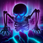
Devorador de AlmasDaño Vasija del VacíoTanque
Vasija del VacíoTanque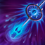
Tejedor de AlmasSanadorBosques susurrantes, desiertos sin fin, oasis, cumbres heladas y cuevas donde nadie ha vuelto. Del nivel 1 al 50, cada región tiene sus monstruos, sus secretos y sus jefes.
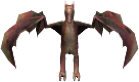
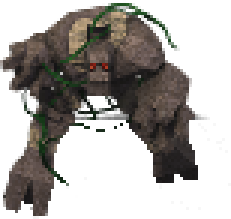
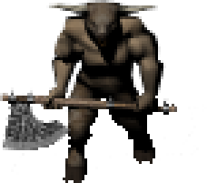
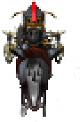
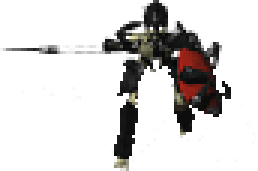
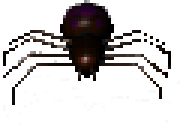
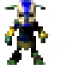
Y muchos más: antliones, demonios, orcos, trolls, hombres lobo, limos, zombis piratas...
Cambia cuando quieras en Opciones. La clásica vista desde arriba para controlarlo todo, o la cámara a tu espalda para sumergirte en el mundo.
La vista de los clásicos: todo el combate a la vista, posicionamiento preciso y lectura clara de las mecánicas en el suelo.
La cámara detrás de tu personaje, con horizonte, cielo y ciclo de día y noche. Para recorrer Destinia como si estuvieras allí.
Descarga el juego, descomprímelo y ábrelo. Se actualiza solo cada vez que lo abres.
El juego completo para Windows (64 bits). Sin instalador ni programas extra.
En la carpeta que quieras. Abre FieldsOfDestiny.Client.exe.
Desde el propio juego. Elige reino, crea tu personaje y a jugar.
También puedes verlo en GitHub.
Busca grupo, comparte tus hazañas, propón ideas y entérate antes que nadie de las novedades.